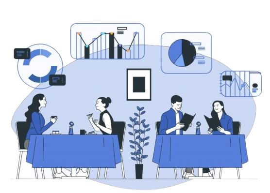

Power BI | SQL | Excel | Dax Studio

A Power BI project delivering actionable insights across key
business functions, showcasing data-driven decision-making through
interactive dashboards, designed to solve real-world business
challenges.
Power Query | Excel | Pivot Table | Power Pivot
A comprehensive analysis of Cyclistic’s bike-share usage patterns
to identify customer trends and support marketing strategies for
increased membership conversion.
An interactive Tableau project for AtliQ Hardware, providing
insights into revenue, profit, top-performing products, and
customers. Designed to support data-driven decisions and
streamline sales analysis.
Power BI | Power Query | DAX
Tracking personal finances can be challenging without proper
tools. This project aims to provide an easy-to-use dashboard to
visualize income, expenses, and savings trends, enabling better
financial planning.
Python | Pandas | Matplotlib

A Python-based analysis of AtliQ Grands, identifying factors
behind declining market share and revenue, offering insights to
enhance competitiveness in the hospitality sector.
FastAPI | Streamlit | MySQL

A Python project using FastAPI, Streamlit, and MySQL to manage and
analyze expenses, with features like expense entry, category-wise
analytics, and monthly trends.
Excel | Pivot Table | Power Query
A data-driven analysis of AtliQ Hardware's sales and financial
performance from 2019 to 2021, leveraging Microsoft Excel for key
insights to optimize revenue and profitability.

A data-driven analysis of Danny's Diner, a fictional restaurant,
examining customer behavior, menu trends, and the effectiveness of
its loyalty program using MySQL.
A data analytics project focusing on financial and operational
benchmarking in the transport and logistics industry. This project
uses MS Access and SQL to generate insights.